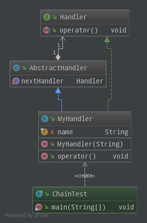

责任链模式
很多对象由每一个对象对其下家的引用而连接起来形成一条链。请求在这个链上传递，直到链上的某一个对象决定处理此请求。发出这个请求的客户端并不知道链上的哪一个对象最终处理这个请求，这使得系统可以在不影响客户端的情况下动态地重新组织和分配责任
UML

Java
- 定义请求处理接口Handler：
public interface Handler { void operator(); }
- 注册下一个请求处理对象：
public abstract class AbstractHandler { private Handler handler; public Handler getNextHandler() { return handler; } public void setNextHandler(Handler handler) { this.handler = handler; } }
- 实现真实请求处理的业务逻辑：
public class MyHandler extends AbstractHandler implements Handler { private final String name; public MyHandler(final String name) { this.name = name; } @Override public void operator() { System.out.println(name + " deal!"); if (getNextHandler() != null) { getNextHandler().operator(); } } }
- 测试代码：
public class ChainTest { public static void main(String[] args) { MyHandler h1 = new MyHandler("h1"); MyHandler h2 = new MyHandler("h2"); MyHandler h3 = new MyHandler("h3"); h1.setNextHandler(h2); h2.setNextHandler(h3); h1.operator(); } }
- 测试结果：
h1 deal! h2 deal! h3 deal!
Scheme
- 定义依次执行请求的函数，事实上定义了整个模式：
;; request 初始请求 ;; handlers 请求链条 (define (chain request handlers) (if (null? handlers) request (chain ((car handlers) request) (cdr handlers))))
- 测试结果：
;; 处理请求的高阶函数 (define (handler s) (lambda (request) (begin (display request) (newline) (display (string-append s " deal!")) (newline) (string-append s " finished")))) ;; 依次执行三个处理 (chain "initial request" (map handler '("h1" "h2" "h3"))) ;; => initial request ;; h1 deal! ;; h1 finished ;; h2 deal! ;; h2 finished ;; h3 deal!
- 这个例子因为请求之间并没有直接关系，实际上可以写的更简单一点：
(map (lambda (s) (begin (display (string-append s " deal!")) (newline) (string-append s " finished"))) '("h1" "h2" "h3"))